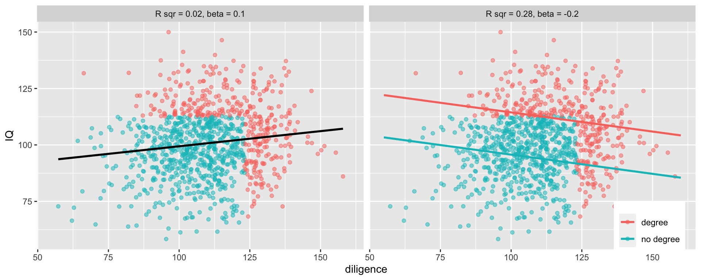
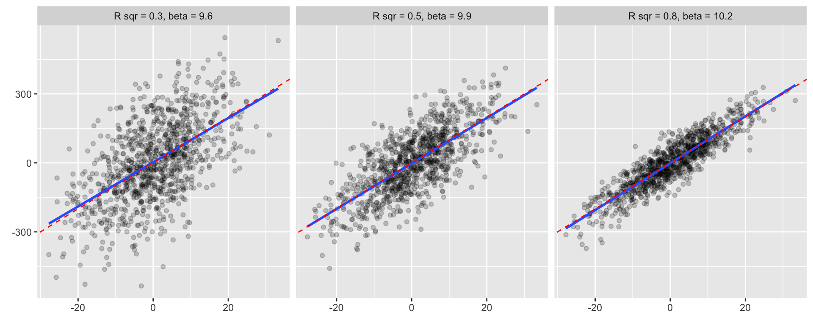
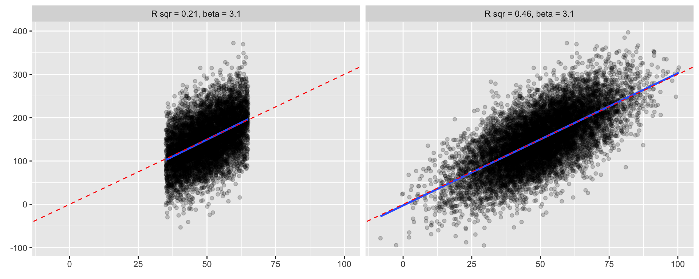

Model fit
So far, we have paid attention to individual coefficients. In this lecture, we will focus on the model as a whole by assessing its model fit. You will learn how to evaluate model fit using R2 and ANOVA, how to compute these in R, and you will also learn about their limitations and the trick they can play on you.
Introduction
Almost any model can be fitted to our data, but not all models will fit equally well. In this course, we will discuss three ways to evaluate model fit:
- Checking if individual model assumptions are fulfilled using diagnostic plots (next lecture).
- Fit indexes that summarize fit into a single number (R2, i.e. coefficient of determination, which we will cover today, is one of them, other frequently used are so called information criteria, i.e. ICs based on maximum likelihood estimation. The most frequently used ones are AIC and BIC and we will not cover them in this course.)
- Formal test of fit (ANOVA/F test). It will be covered here.
Coefficient of determination
The coefficient of determination, also pronounced as ‘R squared,’ is one of the most frequently used measures of model fit. It is the proportion of variance in the dependent variable predicted by the model. E.g. if R2 = 0.32, we can say our model predicts 32% of variance of the dependent variable (in our data). Alternatively, we can say that the depend variable shares 32% of its variance with the independent variables in the model.
(You may also encounter the interpretation that R2 is the proportion of variance “explained” by the model. However, we will try to avoid it as we understand explanation in causal terms (see lecture one). Saying “variance explained” seems to us like unnecessarily misleading use of causal language.)
Computing and interpreting coefficient of determination
Formally, R2 is defined as follows:
\[ R^{2} =1 - \frac{Sum \: of \: Squares_{residual} }{Sum \: of \: Squares_{total}} \]
Or perhaps easier to grasp:
\[ R^{2} =1 - \frac{Sum \: of \: Squares_{our\:model} }{Sum \: of \: Squares_{intercept\:only\:model}} \] Conceptually, this means that we compare our predictions if we only knew the mean of the dependent variable to our predictions based on the actual model.
- The first is sometimes also called null model or intercept only model and it means that we compare the actual observations of the dependent variable to its mean and calculate how much off they are in total in terms of square distance from the mean. That is the denominator in the fraction above.
- The latter is comparison of predicted values by our model with actual observations. Again, we calculate how much off the actual observations are from the predicted values in total in terms of square distance. That is the numerator in the fraction above.
The logic is straightforward. If our model is very good at predicting observed data, the sum of squares of our model is small relative to the sum of square of the intercept-only-model. This means we subtract a small number from 1 and the resulting R2 is large. We can also say that R2 tells us how much we reduced the prediction error by adding our predictors:
- if R2 = 0, then our model is as “good” as if we had no predictor at all
- if R2 = 1, then we predict our data perfectly (in law-like manner)
Graphically, you can compare the intercept-only model with the a linear regression model on the figure below. Conceptually, the closer the red line gets to the points (observed data) on average when compared to the blue line, the bigger the R2.

There is no universal cut-off for when R2 is good enough or too bad. To interpret R2, you need to know the purpose of the model and the fit of related models in the field.
- In laboratory calibrations when perfect relationship is expected, R2 < 0.99 is considered bad and a sign of an equipment failure.
- In day to day stock market, R2 > 0.02 is considered good and such models are used for trading.
In social science, in our experience, you can generally see higher values of R2 for aggregated-level data (such as countries) than for model using individual-level data.
In R, R2 is returned by default when you use summary function on the object created by the lm function.
Properties of R2
Unsurprisingly, \(R^2\) does not change if we rescale any of the variables in the model in a linear way. In other words, centering variables, standardizing variables to z-scores, rescaling from centimeters to inches, from GDP in thousands of EUR to GDP in CZK, etc. will not change the \(R^2\) of the model.
In simple OLS (one predictor), \(R^2\) equals to the square of the correlation between x and y.
ANOVA for model fit
We can also compare two models formally, using ANOVA, i.e, F test. This is like a classic ANOVA, but instead of comparing between- and within-group variance, we are comparing residual variances of two models. Residual variance is the variance of dependent variable not predicted by the model (i.e. the residual sum of squares from the formula above).
We can only use ANOVA to compare two nested models, which means that the more complex model contains all the predictors as the simpler model plus something extra. It is not possible to compare with ANOVA two models where each of them has some unique predictors.
We can use ANOVA to compare the following two models as the first is nested in the second:
\[ y = var1 + var2 \] \[ y = var1 + var2 + var3 \] We cannot use ANOVA to compare the following two models as none of them is nested in the other:
\[ y = var1 + var2 \]
\[ y = var1 + var3 \] ANOVA is a standard statistical test with a test statistic and its p-value.
- The null hypothesis of the ANOVA test = Residual variances of the model with more predictors is not smaller than that of the model with less predictors.
- Alternative hypothesis = Residual variance of the model with more predictors is smaller than residual variance of the model with less predictors.
Using ANOVA in R
In R, you get the ANOVA test by applying the anova function on the object created by the lm function. If you only feed the function with one model, as shown below, you conduct a comparison of the model against the intercept-only model, i.e. model with no predictors. For simple linear regression, this is usually redundant as the t-test of the one predictor and the F-test of the whole model are equivalent in terms of p-value.
mod1 = lm(life_exp ~ hdi, data = countries)
summary(mod1)##
## Call:
## lm(formula = life_exp ~ hdi, data = countries)
##
## Residuals:
## Min 1Q Median 3Q Max
## -4.0465 -1.1026 0.1787 1.0405 2.9161
##
## Coefficients:
## Estimate Std. Error t value Pr(>|t|)
## (Intercept) 43.038 4.610 9.335 4.97e-11 ***
## hdi 41.870 5.273 7.940 2.44e-09 ***
## ---
## Signif. codes: 0 '***' 0.001 '**' 0.01 '*' 0.05 '.' 0.1 ' ' 1
##
## Residual standard error: 1.711 on 35 degrees of freedom
## (1 observation deleted due to missingness)
## Multiple R-squared: 0.643, Adjusted R-squared: 0.6328
## F-statistic: 63.05 on 1 and 35 DF, p-value: 2.441e-09anova(mod1)## Analysis of Variance Table
##
## Response: life_exp
## Df Sum Sq Mean Sq F value Pr(>F)
## hdi 1 184.65 184.654 63.047 2.441e-09 ***
## Residuals 35 102.51 2.929
## ---
## Signif. codes: 0 '***' 0.001 '**' 0.01 '*' 0.05 '.' 0.1 ' ' 1More frequently, you will want to compare two specified models. To do so, we feed them both to the anova function as displayed below. We see residual sums of squares for both models in the output. The test statistic is computed fot their difference. In the case below, the F-test value is 24.9, which together with 1 degree of freedom (degrees of freedom of the first model minus degrees of freedom of the second model) produces a tiny p-value resulting in rejection of the null hypothesis. Indeed, the second model seem a better fit.
mod1 = lm(life_exp ~ hdi, data = countries)
mod2 = lm(life_exp ~ hdi + postsoviet, data = countries)
anova(mod1, mod2)## Analysis of Variance Table
##
## Model 1: life_exp ~ hdi
## Model 2: life_exp ~ hdi + postsoviet
## Res.Df RSS Df Sum of Sq F Pr(>F)
## 1 35 102.509
## 2 34 59.186 1 43.322 24.887 1.777e-05 ***
## ---
## Signif. codes: 0 '***' 0.001 '**' 0.01 '*' 0.05 '.' 0.1 ' ' 1Limitations of R2 and ANOVA
Now that we know how the two tools for assessing model fit work, we will talk about their limitations.
Limitations of ANOVA for model comparison
We already said that ANOVA can be used for comparing nested models only. In addition, all the classic limitations of null hypothesis testing apply:
- It is extremely unlikely for two models to “explain” the exact same amount of variance -> null hypothesis is almost always false by definition.
- Differences do not matter, if they are practically unimportant -> rejecting null hypothesis is by itself not particularly interesting.
- Power matters, just like with any other test -> not rejecting null hypothesis does not necessarily mean the two models predict the same amount of variance. We may just not have enough precision to identify the difference. In other words, we would be able to reject the null hypothesis if we had a bigger sample.
When assessing ANOVA results, it is a good idea to consider the size of the difference in RSS of the two models compared to their original RSSs. It the difference is only a tiny fraction, then perhaps we should not neccessarily opt for the more complicated model, even if p-value is smaller than 0.05.
Limitations of R2
R2 is fundamentally a measure of predictive strength. It may behave unintuitively when used for other than predictive modeling and it may mislead even within predictive modeling. There are 4 trick or “gotcha” moments that R2 can play on you. Know about them and be prepared.
Gotcha 1 - Model with higher R2 does not neccesarily provide a better estimate of true regression coefficients
Imagine we have representative sample of adults and want to analyze the relationship between intelligence (IQ) and work diligence (diligence). We also know if our respondents have a university degree (degree). Suppose that the true relationship (which we usually don’t know, of course) is a weak relationship between IQ and diligence: intelligence = 0.1*diligence, i.e., more intelligent people are somewhat more diligent than the less intelligent ones.
However, the degree is related to both IQ and diligence. For simplicity, in this example they are related in a deterministic manner: only those who are top 20% most intelligent or the top 20% most diligent people will obtain a university degree.
The key question here is whther we should control for degree or not? Degree surely is associated with both IQ and diligence, so why not?
The figure below compares what happens when we do not control for degree (left panel) and when we do control for degree(right panel).

We see that controlling for degree leads to higher R2, but incorrect coefficient estimates! Not controlling for degree actually provides better estimate of the relationship (remember, the true value = 0.1). In other words, higher R2 is no guarantee that or model is (more) correct.
What did just happen? How can controlling for a variable results in wrong coefficients estimates?
This is a general issue. Controlling for variables that are actually causal consequences of the dependent variable and one of the predictors improves predictive power (i.e. raises R2), but regression coefficient will no longer be interpretable in a substantive way. This is also called collider bias. A similar problem also happens with mediators, i.e., when controlling for a variable which a causal effect of the independent variable of interest and also a cause of the dependent variable. See the first few chapters of Pearl et al. (2016) for details.
Conclusion: If the goal of an analysis is interpretation of regression coefficients (either for causal inference or testing a hypothesis generated by theory), do not select variables based on R2. Doing so will sooner or later lead to bias and incorrect conclusions. Use theory and common sense instead to avoid conditioning on colliders and mediators.
Quick note on conditioning
Conditioning is broader term which encompasses multiple practices such as controlling for variables in regression analysis, stratification (in the above example: separate analysis of people with degree and without degree), sub-sampling (in the above example: only analyzing one subsample such as those with degree).
Gotcha 2 - R2 depends on the variance of the dependent variable
Consider variable \(x\) and 3 variables \(y_1\), \(y_2\), \(y_3\). The relationship between \(x\) and all \(y_i\) is the same:
- \(y_i = 0 + 10*x\)
However, each of \(y_i\) has a different standard deviation:
- \(sd_{y_1} = 50\), \(sd_{y_2} = 100\) and \(sd_{y_3} = 150\)

Notice that R2 varies widely, despite all models being perfectly specified and describing the relationship correctly (this is a simulation, we know the data generation process, so we can be sure of that).
(Remember the conceptual distinction between regression coefficients and correlation coefficients. This is a similar issue. They are conceptually different and R2 conceptually allied with correlation coefficients.)
In other words, even perfectly specified model (i.e. all relevant variables present, correct regression specification) can have low R2 due to random error. When there is a lot of randomness in the World, even the best model will have low R2.
- Low R2 does not necessarily mean the estimates are incorrect (biased)
- Low R2 can simply mean that we cannot explain a social phenomenon in its entirety, but that is almost never our goal.
Conclusion: If our goal is substantive interpretation of coefficients, R2 is not a good measure of model’s quality. Low R2 does not mean an explanatory model is bad (analogously, high R2 does not mean the model is good). If our goal is purely predictive and we do not intend to interpret the coefficients, then bigger R2 does mean more precise predictions.
Gotcha 3 - R2 depends on the number of predictors
Consider a variable \(y\) and 15 variables \(x_i\) (\(x_1, \: x_2, \:... \: x_{15}\)). All of these variables are independent of each other. What happens to R2, if we start adding \(x_i\) variables as predictors?
Notice that the more predictors in the model, the higher the R2, even if the dependent variable \(y\) is not related to any of the independent variables \(x_i\) (again, we know this because we generated the data as random and mutually independent).
R2 will increase (almost) every time we add a new predictor, because even if there is no correlation between two variables in the population, sample correlation will rarely be exactly 0 (due to sampling random error). Consequently, to some extent we are predicting random noise (by the way, this is the problem of overfitting in predictive modeling).
A simple solution to this problem has been implemented in almost every statistical package and is called the adjusted R2.
Adjusted R2 (henri1961?) controls the number of predictors in the model (represented by the degrees of freedom). Adjusted R2 only increases when the contribution of a new predictor is bigger than what we would expect by chance.
\[ R^{2}_{adj} = 1 - (1 - R^{2}) * \frac{no. \: of \: observations - 1}{no. \: of \: observations - no. \: of \: parameters - 1} \]
Conclusion: Use Adjusted R2 when you are comparing models with different number of predictors.
Gotcha 4 - R2 depends on the range of independent variables
Consider variables \(y\) and \(x\). The variable \(x\) is normally distributed with mean of 50 and standard deviation of 15. The relationship between them is \(y = 3*x\) with residual standard deviation of 50. What would happen if we limited the range of \(x\) to <35;65> ?

Notice that despite the coefficients being (virtually) the same, R2 gets lower as the range of data gets narrower. Indeed, R2 will naturally get lower as we restrict the range of independent variables. This does not mean that the model is any less valid, just that predictive power is lower.
- e.g. model predicting attitudes based on income will have lower R2 in populations with smaller income differences (other things being equal).
Conclusion: Trimming data, either by filtering out subpopulations or removing outliers, will result in lower R2.
Limitations of R2 Summary
- If the goal is hypothesis testing or causal inference, R2 cannot be used to select which variables to include into the model. Doing so can be actively harmful.
- If the goal is to test a hypothesis or describe a relationship, R2 doesn’t indicate quality of the model
- R2 has to be adjusted when comparing predictive power of models with different number of predictors
- The value of R2 depends on the range of the independent variables
Final notes on coefficient of determination
The output of linear models in R produces R2 by default. But in simple linear regression (one predictor), you can also calculate it from the residual standard deviation, which is also provided in the R output, and the standard deviation of the single independent variable. Maybe realizing this helps to connect some dot in the mental image on variance, standard deviation, residual sum of squares and total sum of squares.
\[ R^2 = 1 - (\sigma_{residual}^2 / \sigma_z^2) \]
We said that there is no general cutpoint for what constitutes a good or a bad R2. We also explained what can go wrong when people start using R2 to navigate their decisions regarding choice of variables or models, especially when modeling for inference rather than prediction. But can we at least say that all the things mentioned in the gotcha examples being equal, better R2 is better? Not quite. If we leave the technical level and take a more normative position, sometimes, small R2 is actually a good thing. The closer R2 is to 1, the better the fit of the model. But it does not mean that we should always be happy with high R2, even substantively speaking. Imagine that you model dependence of students’ score in their university admission test on their parents’ education. If parents’ education strongly predicts students’ score, we will see a high R2. But maybe we should be happier if students’ success was less rather than more dependent on their parents’ education. This is actually a more general concern. We are so focused on relationships in data analysis that we may sometimes forget that a non-relation can also be substantively very relevant.